Therapets may sometimes bring home Seeds from exploring outside. Owners can plant these seeds, and with practice, can make them grow into cool plants for their Therapets' rooms!
You'll first need your Therapet to go Exploring Outside and come back with a seed! There are all sorts of different seeds, and each one grows into a different plant.
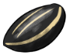 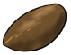 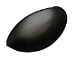 You can only grow one seed at a time!Each seed takes a different amount of time to grow, and there's a chance that it won't grow at all! The higher the rarity of the seed, the higher the chances of failure. Every time you successfully grow a plant, you gain 1 skill point. The more skill you have in gardening, the lower the chances of failure for common and uncommon plants! (Skill does not affect Rare plants unless you have it maxed out)
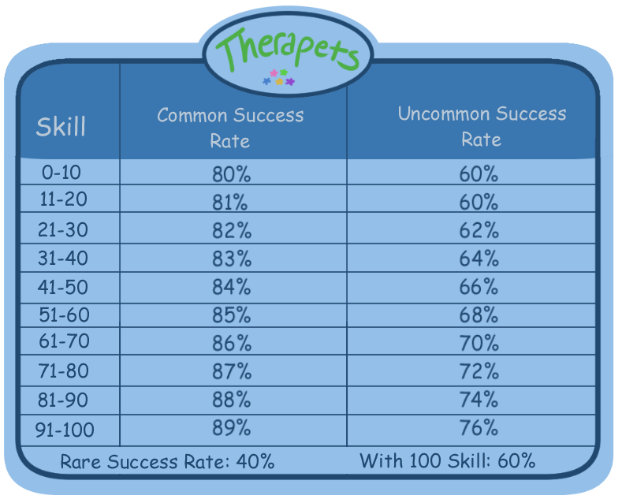When you succeed at growing a plant, it will stay in your garden until you get a clay pot. You can't dig up the plant without something to put it in! Until you get one, you won't be able to plant more seeds. Clay pots can be made through crafting!
Once you have your seed, fill out this form and post it on this journal!
Username:
Skill Level:
Seed to Plant:
A moderator will reply to your comment with how long it will take, and again when it's grown/failed to grow. Once you have a pot, you can reply to the moderator's message saying that you with to pot your plant!
Common seeds take 2 days to grow
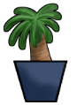Small Palm 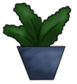Fern 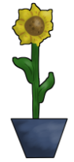Sunflower 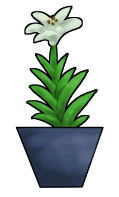Lily 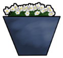DaisyCommon seeds take 4 days to grow
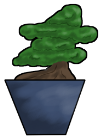Bonsai Tree 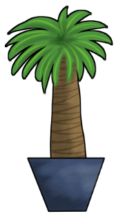Tall Palm 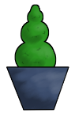Topiary Bush 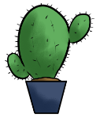Cactus 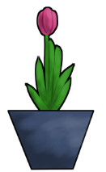Tulip 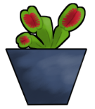Venus FlytrapRare seeds take 1 week to grow
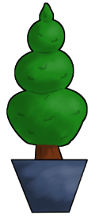Topiary Tree 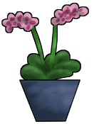Orchid 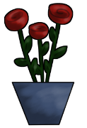Rose